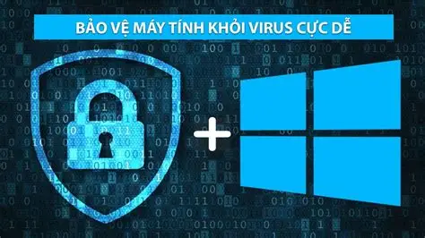

Phần mềm diệt virus thế hệ mới ra mắt
Các chuyên gia an ninh mạng vừa giới thiệu phần mềm diệt virus thế hệ mới sử dụng trí tuệ nhân tạo để nhận diện và ngăn chặn các mối đe dọa chưa từng được biết đến.
🔒 Công nghệ AI trong bảo mật
Ứng dụng AI cho phép hệ thống học hỏi hành vi của người dùng, phát hiện các hoạt động bất thường và phản ứng nhanh chóng trước virus, phần mềm gián điệp hoặc tấn công mạng.
- Phát hiện sớm mã độc chưa có trong cơ sở dữ liệu.
- Giảm tối đa cảnh báo giả nhờ thuật toán học sâu.
- Tự động cập nhật theo thời gian thực.
“Đây là bước tiến quan trọng giúp bảo vệ người dùng tốt hơn trong kỷ nguyên số hóa.” – Nguyễn Trọng Hòa, chuyên gia an ninh mạng.
Phần mềm hiện đang được phát hành miễn phí bản thử nghiệm và dự kiến ra mắt chính thức vào đầu năm 2026. Người dùng có thể tải về từ trang chủ TechNews hoặc các kho ứng dụng phổ biến.
← Quay lại trang Phần mềm